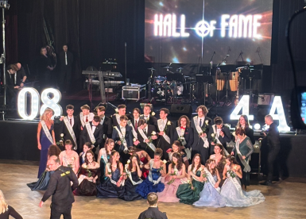
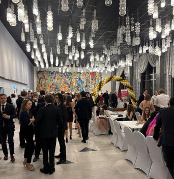

Maturitní ples Gymnázia Kladno – Hall of Fame

V pátek 20. února večer se v Domě kultury Kladno odehrával poslední maturitní ples Gymnázia Kladno letošní sezóny. Ples s názvem „Hall of Fame“, který si pro nás připravili maturanti tříd O.8 a 4.A byl zajisté jedna z největších kulturních událostí tohoto měsíce. Výzdoba sálu značila vysokou úroveň, vše ve zlatohnědém tónu. Dojatí rodiče i prarodiče, sem tam i mladší sourozenec, dívky v krásných večerních róbách a pánové v oblecích. Naše redakce obzvlášť chválí výběr barev šatů maturantek. Většina z nich se držela pro jejich věk osvědčených pastelových barev. Jednalo se opravdu o velkolepou událost. Proto jsme na této akci nesměli chybět ani my, abychom vás o této kulturní akci mohli informovat.
Ples moderoval známý moderátor Jan Špaček, tomu se povedlo rozdělit návštěvníky na dvě poloviny. Někteří ho s nadšením vítali, druzí zas byli spokojeni méně. Ples po všech stránkách splnil všechny oficiální náležitosti. Poděkování studentů se neslo ve veselém, ale přesto solidním duchu. Poté všechny pozdravil pan ředitel PhDr. Lukáš Eichenmann, který popřál všem příjemnou zábavu a studentům štěstí při maturitní zkoušce. Pak už přišel na řadu elegantní nástup tříd a po něm měl každý nárok na svých pár minut slávy. Po kterém byli studenti šerpováni třídními profesory, a tím pasováni na maturanty. Samozřejmě nechyběly květinové dary profesorům a fotografování. Po tanci s rodiči a profesorským sborem byl už sál pro všechny tanečníky. Následně proběhlo půlnoční vystoupení jednotlivých tříd, které bylo zlatým hřebem na konci večera. Tím skončily oficiality a návštěvníci odcházeli domů, zato maturanti a řada jejich spolužáků s nimi šla zapít jejich úspěšný večer na Afterpárty.
Největší lákadlo plesu byla hlavní výhra v tombole. Jednalo se o automobil Škoda Felície. Tento vůz tmavě zelené barvy si domů odnesl jeden šťastlivec z davu lidí, kteří ples navštívili. Byl to dobrý nápad? Tuší šťastlivec, co s sebou tato výhra nese? Obchůzky úřadů, výdaje a starosti navíc. Stojí to šťastlivci za skoro 30 letý vůz?
Sál byl plný i přesto, že se mnoho lístků neprodalo. Toto se často stává u druhých terminů maturitních plesů. V tomto však lze spatřit drobnou výhodu pro účastníky. Neboť na sále je více místa k tanci, jsou menší fronty na barech a celkově více místa pro společenská setkání.
Splnil ples očekávání návštěvníků? Několika jsme se jich zeptali, a díky tomu známe odpověď. Rozhovor s návštěvníky naleznete na našem Instagramu. Rozhodně doporučujeme si tuto krátkou reportáž zhlédnout, abyste byli plně v obraze. ODKAZ NA ROZHOVOR ZDE

Článek zpracovali: Mikuláš Šmejkal & Nicolas Tampír
Březen 2026ZDROJE